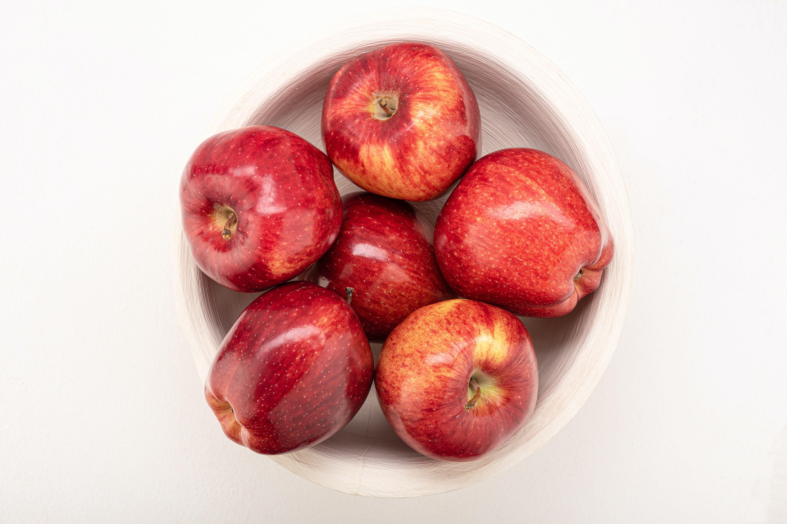
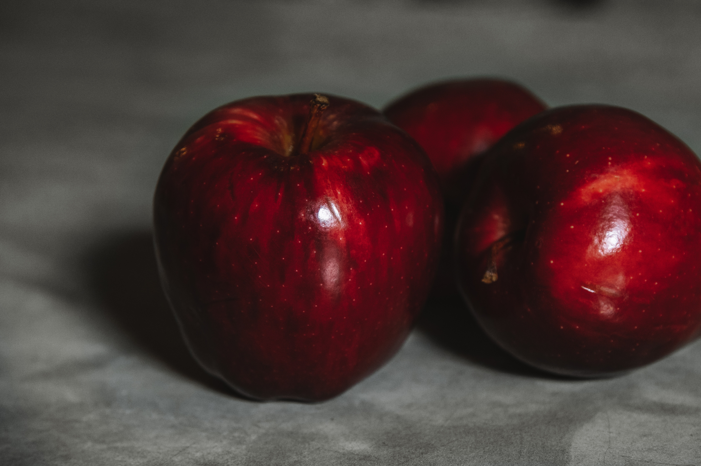

Maça
Nome científico: Malus domesticaA maçã é o pseudofruto pomáceo da macieira (Malus domestica), árvore da família Rosaceae. É um dos pseudofrutos de árvore mais cultivados, e o mais conhecido dos muitos membros do género Malus que são usados pelos seres humanos. As maçãs crescem em pequenas árvores, de folha caducifólia que florescem na Primavera e produzem fruto no Outono.

A árvore é originária da Ásia Ocidental, onde o seu ancestral selvagem, Malus sieversii, ainda é encontrado atualmente.
Até o século XX, os agricultores armazenavam maçãs em depósitos total ou parcialmente subterrâneos durante o inverno para seu próprio uso ou para venda. As melhorias no transporte de maçãs frescas por trem e estradas dispensou a necessidade de armazenamento.
No século XXI, o armazenamento de longo prazo novamente tornou-se popular, quando instalações com "atmosfera controlada" passaram a ser usadas para manter maçãs frescas durante todo o ano. Tais instalações usam alta umidade, baixo teor oxigênio e níveis de dióxido de carbono controlados para manter o frescor da fruta.
"Em vez de distribuir cem maçãs é melhor plantar uma macieira"
D. Rodhain
- Água: 85,56 g
- Proteínas totais: 0,26 g
- Gorduras totais: 0,17 g
- Carboidratos totais: 13,81 g
- Toneladas por ano: 89 milhões
Em 2016, os maiores exportadores de maçãs frescas foram China (U$ 1.35 bilhões), Estados Unidos (U$ 921 milhões), Itália (U$ 896 milhões), Chile (U$ 751 milhões) e França (U$ 586 milhões). Os maiores importadores foram Alemanha (U$ 472 milhões), Reino Unido (U$ 414 milhões), Rússia (U$ 338 milhões), outros países da Ásia (U$ 282 milhões) e Estados Unidos (U$ 273 milhões).
Em 2018 o Brasil produziu 1,1 milhão de toneladas de maçã, sendo o 13º maior produtor do mundo. Em 2020, 15% da colheita do país era exportada - o país passou de importador da fruta a exportador. Os principais destinos da maçã brasileira em 2019 foram Rússia (31%), Bangladesh (29%) e Índia (11%)
